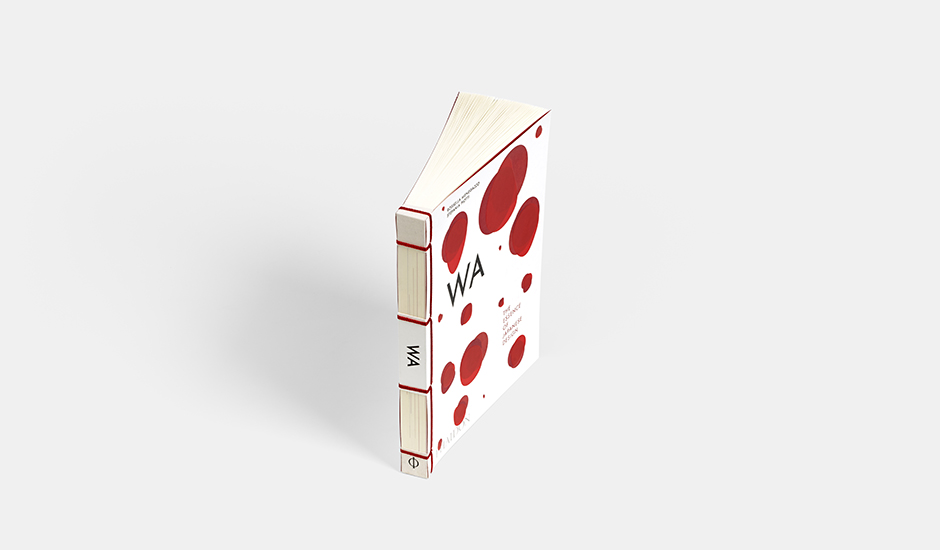

An exploration of contemporary Japanese design: from everyday objects and packaging to interior design and lighting elements. Delve into the manner in which Japanese design manages to harness its materials – whether natural or synthetic – at the same time combining respect for tradition with forward-thinking and experimentation.